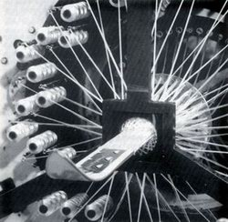

|
Ayhan
Enþici
ensicia@itu.edu.tr,
Þubat 2004
Araþtýrma Görevlisi
ÝTÜ
Edüstri Ürünleri Tasarýmý Bölümü
Kompozit malzeme tanýmý, temel olarak iki veya daha fazla
malzemenin bir arada kullanýlmasýyla oluþturulan ve meydana
geldiði malzemelerden farklý özelliklere sahip yeni tür malzemeleri
belirtmek için kullanýlmaktadýr. Genel olarak ise kompozit
malzeme denildiðinde -ve bu yazýda bahsedilecek olan- elyaf
ile güçlendirilmiþ plastik malzemeler anlaþýlmaktadýr.
Ýlk
modern sentetik plastiklerin 1900'lerin baþýnda geliþtirilmesinin
ardýndan, 1930'larýn sonunda plastik malzemelerin özellikleri
diðer malzeme çeþitleri ile boy ölçüþür düzeyde geliþmeye
baþlamýþtýr. Kolay biçim verilebilir olmasý, metallere oranla
düþük yoðunlukta olmasý, üstün yüzey kalitesi ve korozyona
karþý dayanýmý plastiðin yükselmesindeki en önemli özelliklerdir.
Bir çok üstün özelliðinin yanýsýra sertlik ve dayanýklýlýk
özelliklerin düþük olmasý plastik malzemelerin güçlendirilmesi
için çalýþmalar yapýlmasýna neden olmuþur. Bu eksikliðin giderilmesi
amacýyla 1950'lilerde polimer esaslý kompozit malzemeler geliþtirilmiþtir.
Kompozitler, özellikle polimer kompozitler yüksek mukavemet,
boyut ve termal kararlýlýk, sertlik, aþýnmaya karþý dayanýklýlýk
gibi özellikleriyle pek çok avantajlar sunarlar. Ayrýca kompozit
malzemeler dayanýklýlýk ve sertlik yönünden metallerle yarýþabilecek
olmasýna raðmen çok daha hafiftirler.
Kompozit
malzemeler reçine (Matrix) ve takviye (Reinforcement) bileþenlerinden
oluþur. Kompozitler temel olarak kalýp görevi gören reçine
içine gömülmüþ sürekli veya kýrpýlmýþ elyaflardan oluþmaktadýr.
Bu bileþenler birbirleri içinde çözülmezler veya karýþmazlar.
Kompozit malzemelerde elyaf sertlik, saðlamlýk gibi yapýsal
özellikleri, plastik reçine malzemesi ise elyafýn yapýsal
bütünlüðü oluþturmasý için birbirine baðlanmasý, yükün elyaf
arasýnda daðýlmasýný ve elyafýn kimyasal etkilerden ve atmosfer
þartlarýndan korunmasýný saðlar.
Tablo
1. Matris, Takviye elemaný ve Kompozit malzeme yapý tipleri
(Olcay ve dið,2002)
| Matris
Malzemeleri |
Takviye
Elemanlarý |
Kompozit
Yapýnýn Þekli |
| Polimerler |
Lifler |
Tabakalar |
| Metaller |
Granül
|
Kaplamalar |
| Seramikler |
Whiskers
|
Film-Folya |
| |
Pudra |
Honey-Combs
(Bal peteði) |
| |
Yonga |
Filaman
Sarýlmýþ Yapýlar |
Kompozitlerde
matris olarak kullanýlan malzemeler;
Kompozit
malzemelerde kullanýlan matrisler, polimerlerden (termosetler
ve termoplastikler) metal ve seramiklere kadar deðiþmektedir.
Polimerler düþük yoðunluklu göreceli olarak düþük dayanýklýlýktadir.
Baþlýca polimer matris malzemeleri polyester, epoksi, fenol
ve vinil esterdir.
Kompozit malzemelerde takviye amacýyla kullanýlan elyaflar;
1
Doðal elyaflar (artýk yerlerýný sentetik elyaflara býrakmýþlardýr)
2 Sentetik, organik elyaflar; Naylon, aramid (düþük yoðunluklu
ve güçlü elyaflardir)
3 Sentetik inorganik, elyaflar ; Cam,karbon boron vb.
En çok kullanýlan kompozit malzeme kombinasyonlari; Cam elyafý+
polyester, karbon elyafý+epoksi ve aramid elyafi+epoksi birleþimleridir.
Kompozit malzemeler katlý tabakalar veya ince tabakalar halinde
uygulanabilmektedir. 1940'larin sonlarýnda geliþtirilen CTP
(Cam Takviyeli Polyester-CTP/ Glassfiber Reinforced Polyester/GRP,
FIBERGLASS) günümüzde en çok kullanýlan ve ilk modern polimer
esasli kompozit malzemedir. Bugün üretilen tüm kompozit malzemelerin
yaklaþýk olarak % 85'i CTP'dir ve çoðunlukla tekne gövdeleri,
spor araçlari, paneller ve araba gövdelerinde kullanýlmaktadýr.
CTP
ve diger kompozit kombinasyonlarý günümüzde tercih edilmesinin
ve kullanýmýnlarýndaki artisin mutlak sebepleri saðlamlýklari
ve hafiflikleridir. Çeþitli plastik malzemelerin seramik,
metal bazen de sert polimerlerin elyaflarý ile güçlendirilerek
ileri derecede faydalar saðlayan malzemeler üretmek mümkündür.
Ýçindeki plastik sayesinde kolaylýkla þekil verilebilen ve
takviye elyaflar sayesinde son derece saðlam, sert ve hafif
olan bu malzeme kombinasyonlari, kompozitler hergün yepyeni
uygulama alanlarýnda karþýmýza çýkmaktadýrlar.
Ayrýca metallere kýyasla malzeme yorulmasý, malzeme üzerinde
hasarlarýn tolere edilmesi ve korozyona dayanýklýlýk özellikleri
bakýmýndan avantaj saðlamaktadýr. Tüm bu faydalarýna raðmen
kompozitlerin tamamýyla metalin yerine geçmemesinin dört ana
sebebi vardýr;
1.
Titanyum ve çelik gibi metallerin bazi uygulamalarda ihtiyaç
duyulan kritik düzeyde ýsý, mekanik özellikleri günümüz kompozitleri
karþýlamamaktadýr.
2. Yeni geliþtirilen matris malzemelerle, elyaflarin tüm karakteristik
özellikleri metaller kadar bilinememektedir.
3. Bazi karmaþýk biçimler düsük maliyetler çerçevesinde üretilememektedir.
4. Kompozitler kg baþýna düsen üretim maliyeti rakamlari metallerden,
özellikle aluminyum, daha yüksektir
Resim
1.Kompozit Malzemelerinin Uçak Yapýmýnda Kullanýldýðý Yerler
Kompozit
malzemelerin genel avantajlarý;
1.
Farklý mekanik özellikler elde etmek için farklý katmanlardan
ve farklý kombinasyonlarla kompozit malzeme inþa edilebilir.
2. Kompozit malzemeler kimyasallara, korozyona ve hava þartlarýna
dayanýklýk gösteririr.
3. Karmaþýk parçalarýn tek olarak üretilebilmesinden dolayý
parça sayýsýnýn azalmasýný saðlarlar. Böylece ara birleþtirme
detay ve parçalarýnýn azalmasýyla üretim süresi kýsalmaktadýr.
4. Yüksek dayanýklýlýk/ yoðunluk oraný
5. Yüksek modülüs/aðýrlýk oraný
Dezavantajlar;
1.
Hammaddenin pahalý olmasý; Uçaklarda kullanýlabilecek kalitede
karbon elyafýnýn bir mkarelik kumaþýnýn maliyeti yaklaþýk
50 $ 'dýr
2. Lamine edilmiþ kompozitlerin özellikleri herzaman ideal
deðildir, kalýnlýk yönünde düþük dayanýklýlýk ve katlar arasý
düþük kesime dayanýklýk özelliði bulunmaktadýr
3. Malzemenin kalitesi üretim yöntemlerinin kalitesine baðlýdýr,
standartlaþmýþ bir kalite yoktur.
4. Kompozitler kýrýlgan (gevrek) malzeme olmalarýndan dolayý
kolaylýkla zarar görürler, onarýlmalarý yeni problemler yaratabilir.
o
Malzemelerin sýnýrlý raf ömürleri vardýr. Bazý tür kompozitlerin
soðutularak saklanmalarý gerekmektedir.
o Sýcak kurutma gerekmektedir.
o Kompozitler onarýlmadan önce çok iyi olarak temizlenmeli
ve kurutulmalýdýr. Bazý durumlarda bu zor olabilir.
o Bazý kurutma teknikleri uzun zaman alabilmektedir

Resim
2.Kar kayaklarýnýn kompozit malzeme ile üretilme aþamasý
Matrisler;
Kompozit
malzemelerde polimer esaslý matrislerin yanýsýra metal, seramik
türevi malzemeler de matris olarak kullanýlmaktadýr. Diðer
matrislerin kullanýlmasýna raðmen kompozit malzemelerin %
90'ý polimer esaslý matrislerle üretilmektedir. Matris
malzemelerinin genellikle plastik esaslý olmasýndan dolayý
kompozit malzemeler de genellikle takviye edilmiþ plastikler
olarak adlandýrýlýrlar. Metal matrisler büyük çaplý uygulamalarda
kullanýlmak için çok pahalý ve çalýþýlmalarý çok zordur. Seramik
matrisler ise yüksek oranda kýrýlgan olmalarýndan dolayý yeterli
dayanýklýlýða sahip olmamalarý nedeniyle kullaným alanlarý
yüksek ýsý ile kullanýlan yerlerle sýnýrlanmaktadýr. Karbon
matrisli kompozit malzemeleri üretmek çok zor ve çok pahalýdýr.
En çok tercih edildikleri uygulamalar yarýþ arabalarýnýn ve
uçaklarýn fren balatalarýdýr. Tüm diðer matris alternatifleri
arasýnda ticari olarak en uygun olan plastik matrisler arasýnda
ise en çok kullanýlan termoset esaslý olan polyester ve epoksi
reçineleridir.
Matrisler
güçlü yapýþtýrma, çevre ve atmosfer þartlarýna yüksek dayaným
ve yüksek mekanik özellikler gösterirler. Bir matrisin öncelikle
saðladýðý mekanik özellikler yüksek sertlik ve yüksek dayanýklýlýk
deðerleridir. Ýyi bir malzeme sert olmalýdýr, fakat gevrek
bir malzemenin gösterdiði davranýþlardan dolayý performansý
düþmemelidir. Bu özellikleri büyük ölçüde karþýlayan polimer
esaslý matrisler termoset ve termoplastik matrisler olarak
iki tür olarak bulunmaktadýr;
Termoset Matrisler;
Termoset
esaslý kompozit malzeme matrisleri olarak en çok kullanýlanlardýr.
Termoset plastikler sývý halde bulunurlar, ýsýtýlarak ve kimyasal
tepkimelerle sertleþir ve saðlamlaþýrlar. Termoset polimerlerin
polimerizasyon süreci termoplastiklerden farklý olarak geri
dönüþü olmayan bir süreçtir. Yüksek sýcaklýklarda dahi yumuþamazlar.
Çoðu termoset matris sertleþmemeleri için dondurulmuþ olarak
depolanmak zorundadýr. Dondurucudan çýkarýlýp oda sýcaklýðýnda
bir müddet (1-4 hafta arasý) bekletildiðinde sertleþmeye baþlar
ve özelliklerini kaybederek biçim verilmesi zor bir hâl alýr
ve kullanýlamaz duruma gelir. Dondurucu içinde olmak þartýyla
raf ömürleri ise 6 ila 18 ay arasýnda deðiþmektedir. Termoset
reçineler kimyasal etkiler altýnda çözülmez ve olaðandýþý
hava þartlarýnda dahi uzun ömürlü olmaktadýrlar. Aþaðýda en
yoðun kullanýlan matrisler ve genel özellikleri yeralmaktdýr;
*
Bu rapor www.designophy.com sitesinden alýnmýþtýr.
|